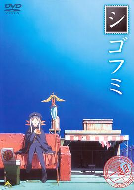

死后文 / シゴフミ
又名：Shigofumi
感觉很久没有能泪人的动画了，本作从第九集开始就比较能启发、感动人了。ED和剧中音乐都做得不错~
作品信息
| 导演 | 佐藤龙雄 / 樱美胜志 / 长井龙雪 / 铃木行 / 桥本敏一 / 矢吹勉 / 上田繁 |
| 编剧 | 大河内一楼 |
| 主演 | 植田佳奈 / 松冈由贵 / 寺岛拓笃 / 浅野真澄 / 加藤将之 / 野岛昭生 / 代永翼 / 仙台惠理 / 大前茜 / 阿部敦 / 木村良平 / 喜多村英梨 / 新井里美 / 平川大辅 / 岩永哲哉 / 小山力也 / 千叶纱子 / 折笠富美子 / 稻村优奈 / 冈野浩介 |
| 类型 | 动画 |
| 制片国家/地区 | 日本 |
| 语言 | 日语 |
| 首播 | 2008-01-05(日本) |
| 集数 | 12 |
| 单集片长 | 24 |
| IMDb | tt1161688 |
最后一次看到是 2026-08-01T11:07:16+10:00 · 豆瓣原页